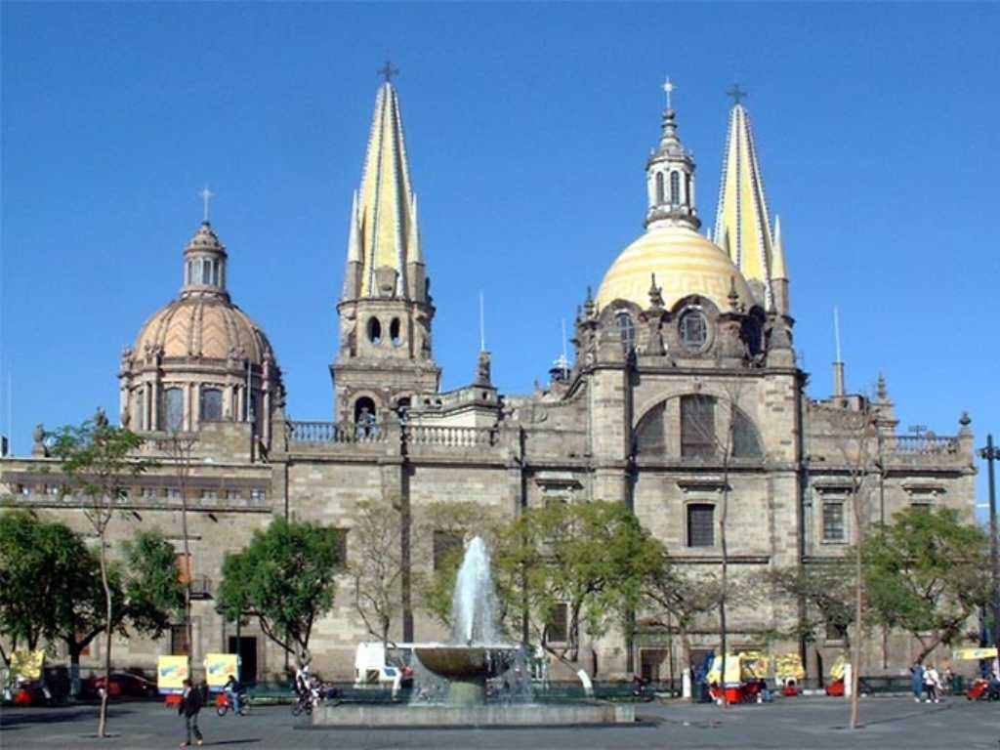
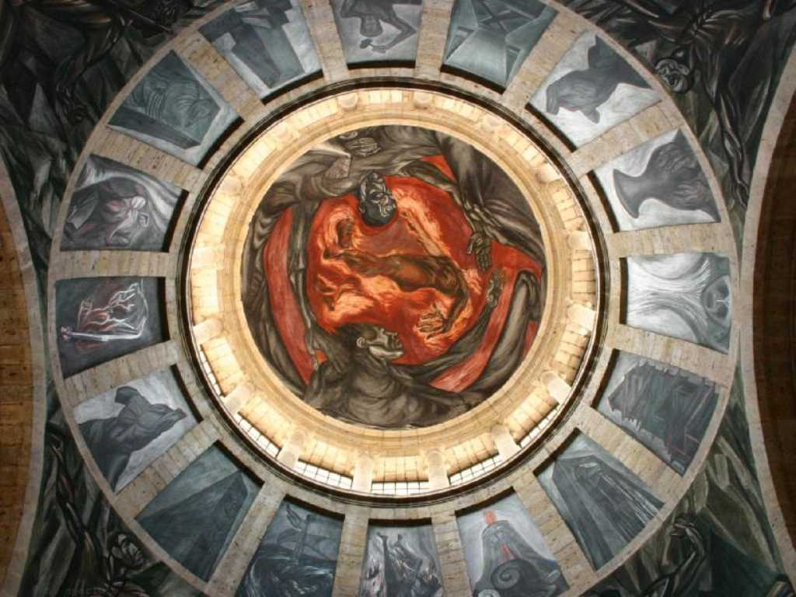
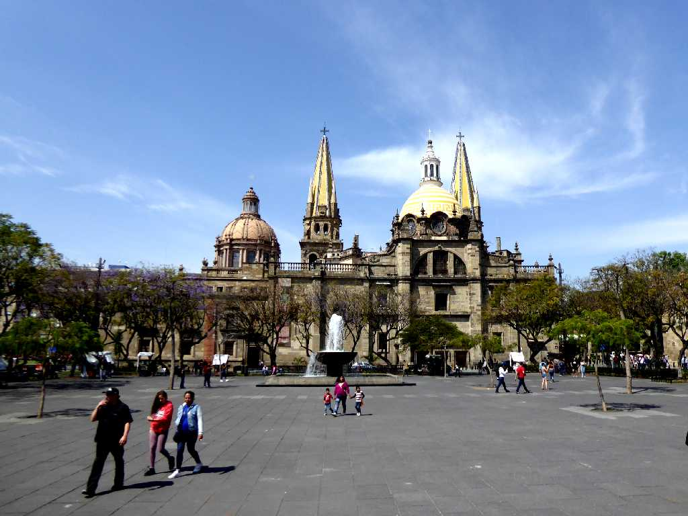
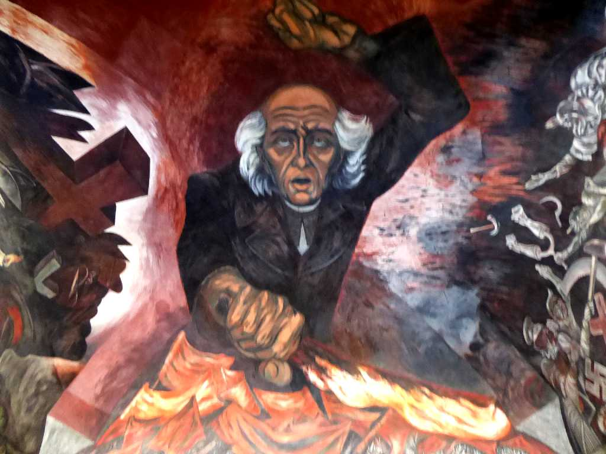
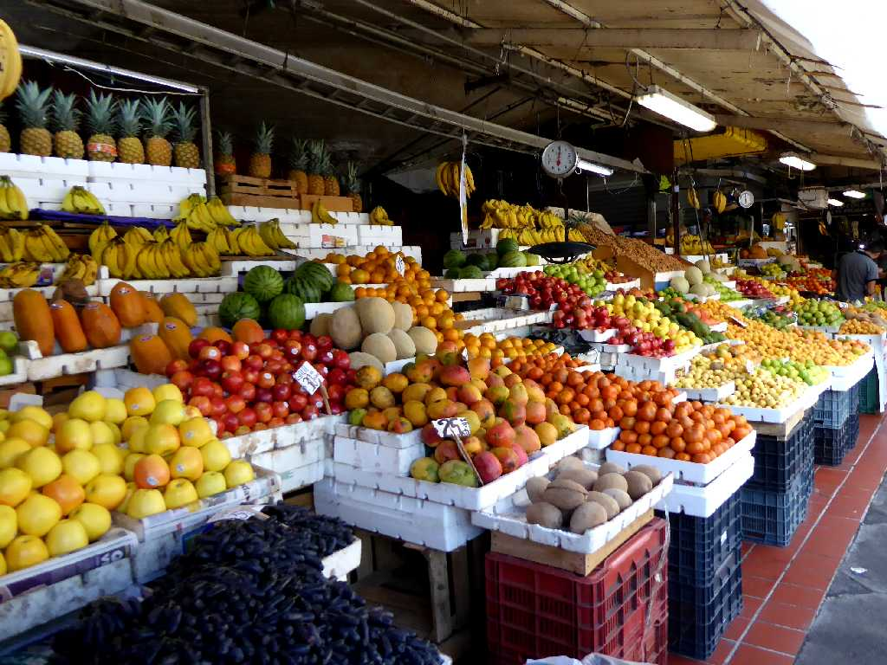
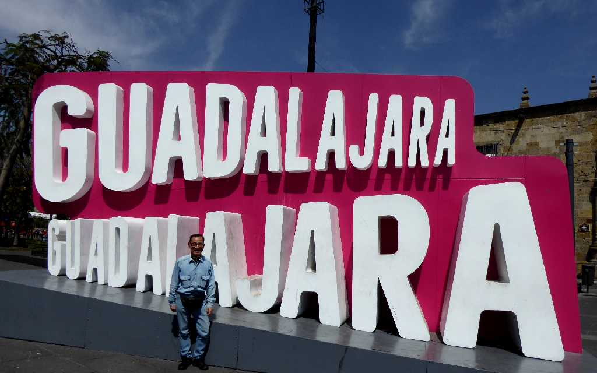

Catedral de Guadalajara
メキシコ第二の都市グアダラハラのシンボル大聖堂

Orozco The Man of Fire Instituto Cultural Cabanas
グアダラハラには美しい壁画がある 炎の人 オロスコ

Catedral de Guadalajar Plaza de la Liberación
約４０年ぶりの再訪問

Orozco Miguel Hidalgo Palacio de Gobierno del Estado de Jalisco
革命の芸術と讃えられているハリスコ州政府宮殿の壁画 叫びをあげるイダルゴ神父 ミゲルイダルゴ オロスコ

Mercado Libertad
グアダラハラのリベルタ市場

March 7 2020 Plaza de la Liberación Guadalajara
メキシコ５,８００㎞縦断の旅は約４０年前と同様にグアダラハラから始まり今回はユカタン半島のカンクンに陸路で向かう